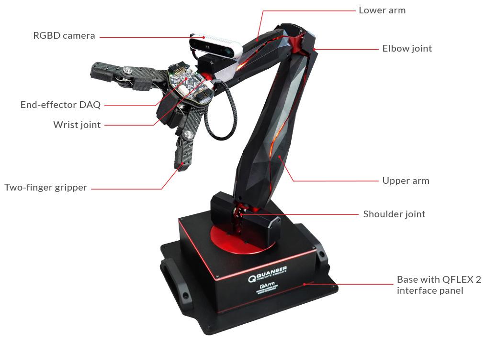

We intricately crafted the Q-arm container through the meticulous application of Computer-Aided Design (CAD), adhering to stringent 3D printing guidelines. Thorough material testing was conducted to ensure compliance with medical-grade standards and strict heating constraints. The outcome exceeded established benchmarks for safety in medical applications. Refer to image below.
